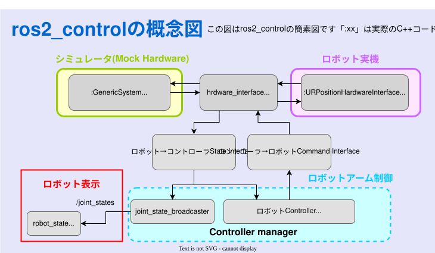
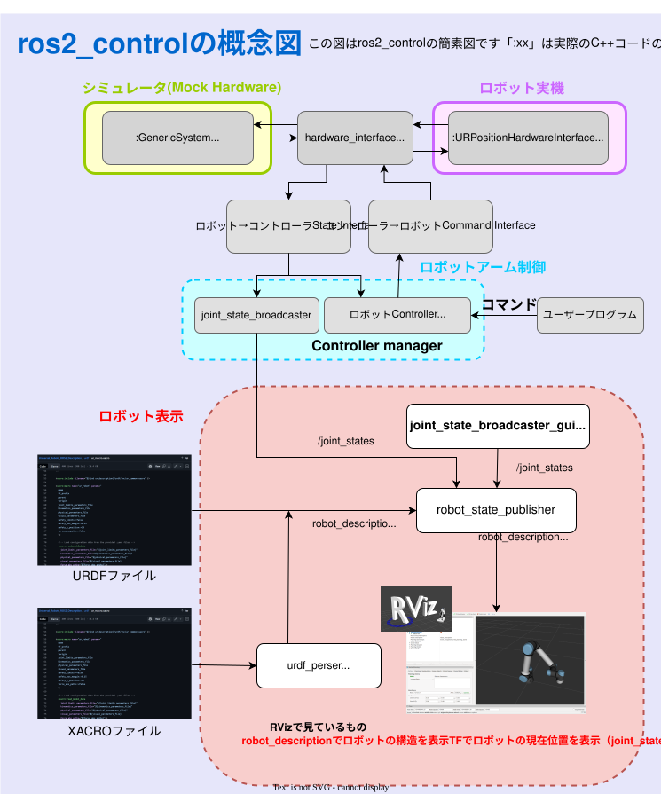

ゼロからのROS2
ROS2におけるシミュレータ
大阪大学 中島優作
本スライドのゴール

↑ シミュレータで表示した例。一見、前章のモデル表示と同じに見えますが、中身はまったく違います
前章との違い
前章と本章の決定的な違いは
「制御」しているかどうか です。
前回（モデル表示）
GUIでパラメーターを変えて、
単に「表示」を動かしていただけ。
今回（シミュレータ）
コントローラ（制御プログラム）が
計算して「ロボット」を制御します。
💡 ここでのコードは、設定を切り替えるだけで「実機」でもそのまま動きます。
ROS2のシミュレータの種類
| 比較項目 | 簡易シミュレーション | 物理シミュレータ |
|---|---|---|
| ツール名 | Mock Components (ros2_control) |
Gazebo |
| 仕組み | 物理演算 なし 指令通りに動いたことにする |
物理演算 あり 重力・摩擦・衝突を計算 |
| 特徴・用途 | 動作が非常に軽い 動作・通信の確認に最適 |
処理が重い より現実に近い検証が可能 |
※多くの場合は簡易シミュレーションで十分です。物理シミュレータはシミュレーション上での学習等で使います。
Mock Components vs Gazebo
→ 全画面表示
Mock Components (ros2_control)
↑ 見かけは実機のロボットを動かすときと全く同じです
Mock Components の実践
- モデル表示に加えて、ロボット制御部分のコードを追記する必要があります
↓以下で説明
まずは ROS 2 control を更新
Mock Components が起動しない場合、controller_manager と
realtime_tools の不整合で落ちることがあります。まず関連パッケージを更新します。
sudo apt update &&
sudo apt install --reinstall \
ros-humble-realtime-tools \
ros-humble-controller-manager \
ros-humble-ros2-control \
ros-humble-ros2-controllers \
ros-humble-joint-state-broadcaster \
ros-humble-joint-trajectory-controller \
ros-humble-ros2controlcli
まずはLaunchを作成
Ur5eの例
controller設定ファイルを作成
xacroを作成
⚠️ このxacroはシミュレータ (mock_components) 専用であり、実機では使用できません。
ビルドと実行
- ビルドします
cd ~/ros2_ws
colcon build
source install/setup.bash
ros2 launch ros_study ur5e_bringup_with_mock_components.launch.py
ros2 run rqt_joint_trajectory_controller rqt_joint_trajectory_controller
表示されない時のRvizの設定
実行結果の確認
- 見た目: RViz上の表示はモデル表示と同じに見えます。
- 動作: 別端末で
rqtを起動し、プラグインから「Joint Trajectory Controller」を選択してスライダー操作を行うと動きます。 - トピック:
/joint_statesはjoint_state_broadcasterから配信されます。
$ ros2 run rqt_gui rqt
(Plugins > Robot Tools > Joint Trajectory Controller)
$ ros2 topic info /joint_states
Type: sensor_msgs/msg/JointState
Publisher count: 1 (joint_state_broadcaster)
※データフローの詳細は「ros2_control」の章で解説します。
Mock Components のLaunchの解説
- ros2_controlの全体像を含めて、どういう通信が行われているのかの理解が必要です
↓以下で説明
ros2_controlの概要

モデル表示も含めたros2_controlの全体像
※図をクリックすると拡大表示されます

Launchファイルと構成図の対応
Mock Componentsの裏で動いているコントローラ
JointTrajectoryController
ROSのアーム制御の標準
ROSでアームを動かすなら「まずはこれ」と言えるデファクトなコントローラです。
機能概要：
プログラムから「関節目標軌道（JointTrajectory）」を受け取り、
ロボットがその通りになめらかに動くよう制御します。
入出力フロー
JointTrajectory Msg
[q1, q2, q3...] + 時間
Controller
時間の補間(Spline)
各時刻の目標値を計算
各関節への指令
位置 / 速度 / トルク
⚠ 注意：手先座標 (XYZ) ではありません
「肩を30度、肘を90度」のように
全ての関節の指令が必要です。
「手を座標(x,y,z)へ」という指令は
直接受け付けられません。
Gazebo

【注意】Gazeboは2種類ある
実は現在、世代交代の過渡期であり2つの「Gazebo」が存在します。
ネットで検索する際は区別に注意が必要です。
Gazebo Classic
(通称: 旧Gazebo / Gazebo 11)
- 長年使われてきたバージョン
- 資料が豊富で安定している
- コマンドは
gazebo - 2025年にサポート終了予定
Gazebo (New)
(旧称: Ignition Gazebo)
- 次世代のモダンなシミュレータ
- 画像が綺麗で動作も軽量化
- コマンドは
gz sim - 今後の主流はこちら
Gazebo環境のセットアップ
- ROS 2とGazeboを通信させるためのパッケージをインストールします
1. モダンなGazebo (推奨) の場合
本スライドではこっちを使います
# ros_gz: ブリッジやシミュレータ本体
sudo apt-get install ros-${ROS_DISTRO}-ros-gz
# ros2_control 連携: Gazebo上のロボットを controller_manager で動かす
sudo apt-get install ros-${ROS_DISTRO}-gz-ros2-control
2. Gazebo Classic (旧) の場合
# gazebo_ros_pkgs (Classic用の関連パッケージ)
sudo apt-get install ros-${ROS_DISTRO}-gazebo-ros-pkgs
Gazeboの起動確認
インストールが完了したら、gazeboを起動
Humble の場合
(Gazebo Fortress)
# コマンドは "ign" です
ign gazebo shapes.sdf
Jazzy の場合
(Gazebo Harmonic)
# コマンドは "gz" です
gz sim shapes.sdf
⚠️ 初回起動時の注意
初めて起動する際はモデルデータのダウンロードが行われるため、 画面が出るまでに数分間、真っ暗な状態が続くことがあります。 故障ではないのでそのまま待ってください。
メッシュが見つからない場合
package://... や model://... の解決に必要な
GZ_SIM_RESOURCE_PATH / IGN_GAZEBO_RESOURCE_PATH が不足していることがあります。
export GZ_SIM_RESOURCE_PATH=/opt/ros/${ROS_DISTRO}/share:~/zero_ros/ros2_ws/install/ros_study/share
export IGN_GAZEBO_RESOURCE_PATH=$GZ_SIM_RESOURCE_PATH
mesh 解決エラーが出ると、ロボットが一部だけ表示されたり、まったく見えないことがあります。
ros2_controlとの連携
どちらのGazeboを使う場合でも、ros2_control経由で動かすという基本構成は変わりません。
切り替えの仕組み
- Mock Components: 実機なし、物理演算なし
- Gazebo Classic:
gazebo_ros2_controlプラグインを使用 - Gazebo (New):
gz_ros2_controlプラグインを使用
※本講座では、環境構築の手軽さから Gazebo (New) を使用します。
[実践 1] URDFの修正
Gazeboで動かすには、ロボットの記述（URDF）に
「Gazebo用の設定」を追記する必要があります。
ros2_controlタグの書き換え
urdf/ros2_control.xacro
<hardware>
<plugin>mock_components/GenericSystem</plugin>
</hardware>
<hardware>
<plugin>gz_ros2_control/GazeboSimSystem</plugin>
</hardware>
GazeboSimSystem
というプラグインを指定することで、
「実在しないハードウェア」ではなく「Gazebo上のロボット」として認識されます。
Gazeboプラグインの追加
robot.urdf.xacro の末尾に、Gazebo から ROS 2 制御を呼ぶタグを追加します。
<gazebo>
<plugin filename="gz_ros2_control-system"
name="gz_ros2_control::GazeboSimROS2ControlPlugin">
<parameters>
$(find ros_study)/config/ur_joint_trajectory_controller.yaml
</parameters>
</plugin>
</gazebo>
⚠️ ハマるポイント
このタグがないと表示だけされて、controller_manager が起動せず動きません。
[実践 2] Launchファイルの作成
Gazeboを起動し、そこにロボットを登場させる（Spawn）
ためのLaunchファイルを作成します。
Gazebo起動とSpawn (Python)
# 1. Gazebo Sim の起動
gazebo = IncludeLaunchDescription(
PythonLaunchDescriptionSource(
[PathJoinSubstitution([FindPackageShare("ros_gz_sim"),
"launch", "gz_sim.launch.py"])]
),
launch_arguments={"gz_args": "-r empty.sdf"}.items(),
)
# 2. ロボットのSpawn (出現させる)
spawn_entity = Node(
package="ros_gz_sim", executable="create",
arguments=[
"-topic", "robot_description", # URDFを読み込む
"-name", "my_robot",
"-z", "0.1", # 地面へのめり込み防止
],
output="screen",
)
# 3. ブリッジ (ROS2 <-> Gazebo 通信)
bridge = Node(
package="ros_gz_bridge", executable="parameter_bridge",
arguments=[
# クロック(時間)の同期
"/clock@rosgraph_msgs/msg/Clock[gz.msgs.Clock",
],
output="screen",
)
※コントローラの起動部分はMockの時と同じなので省略しています
実ファイル: Gazebo用 xacro
実ファイル: Gazebo起動Launch
実行と確認
cd ~/ros2_ws
source install/setup.bash
ros2 launch ros_study ur5e_bringup_with_gazebo.launch.py
動かない場合：
「再生ボタン(▶)」が押されているか確認してください。
Gazeboは起動直後、一時停止状態の場合があります。
controller が出ない場合：
ros2 control list_controllers がつながらないときは、
gz_ros2_control 未導入かresource path不足が多いです。
とくに mesh 解決エラーが出る場合は
GZ_SIM_RESOURCE_PATH / IGN_GAZEBO_RESOURCE_PATH
を確認してください。
Gazebo版でハマりやすい点
gz_ros2_control未導入:/controller_managerが立たず、spawner が待ち続ける- resource path 不足: mesh や package 参照に失敗してロボットが崩れたり見えなかったりする
- 再生ボタン未押下: Gazebo が一時停止で、見た目は出ていても時間が進まない
ros2 topic echo /clock --once
ros2 action list | grep scaled_joint_trajectory_controller
/clock と controller の両方が見えていれば、Gazebo 側の最小構成は概ね正常です。
ROS 2とGazeboの通信
なぜ「ブリッジ」が必要なのか？
その仕組みとデータの流れを図解で理解します。
言葉の壁（ミドルウェアの違い）
ROS 2とGazeboは、裏側で使っている通信の仕組み（言語）が異なります。
ROS 2
通信方式: DDS
Gazebo
通信方式: Gz Transport
直接は会話できないため、翻訳機（ros_gz_bridge）が必要です。
データの流れ（ダイアグラム）
(Nav2 / MoveIt)
ROS msg ➡ Gz msg
Gz msg ➡ ROS msg
(物理・センサ演算)
Launchファイルの引数の書き方
- /topic_name : 通信したいトピック名
- @ : ROS 2の型 を指定する区切り文字
- ros_type : ROS側のメッセージ型
- [ : Gazeboの型 を指定する区切り文字
- gz_type : Gazebo側のメッセージ型
実際の記述例（関節の状態）
/joint_states@sensor_msgs/msg/JointState[gz.msgs.Model
【重要】シミュレーション時間の同期
物理シミュレーションでは、計算負荷によって「時間の進む速さ」が現実と異なります。
/clock トピックの役割
Gazeboが進めている「シミュレーション内の現在時刻」をROS 2側に配信します。
ROS
2ノードはこれを受け取り、「今は現実時間の何時か？」ではなく「シミュレーション世界の何秒目か？」を基準に動くようになります。
(パラメータ use_sim_time:=True
が必要な理由です)
Gazeboでの環境（障害物）の構築
ロボットを何もない空間（Empty World）ではなく、
障害物や壁がある環境で動かす方法を学びます。
環境を作る2つの方法
A. GUIで配置
- 画面上でドラッグ＆ドロップ
- 直感的で簡単
- 一時的なテスト向き
B. Worldファイル
- コード（SDF）で記述
- 毎回同じ環境を再現できる
- 本格的な開発・検証向き
A. GUIでの配置 (Gazebo Fuel)
Gazebo (New) には「Resource
Browser」があり、
オンライン上のモデルライブラリ（Fuel）から物体を呼び出せます。
- 画面右側のタブから [Resource Browser] を開く
- 検索窓に「table」や「box」と入力
- 好きなモデルをメイン画面にドラッグ＆ドロップ
💡 Tips:
配置した環境は、左上のメニューから
File > Save World as... で保存（.sdfファイル）できます。
B. Worldファイルの作成 (SDF)
Launchファイルで empty.sdf の代わりに読み込ませる
オリジナルの世界ファイル（例:
my_world.sdf）を作ります。
<sdf version="1.6">
<world name="my_custom_world">
<physics name="1ms" type="ignored">
<max_step_size>0.001</max_step_size>
<real_time_factor>1.0</real_time_factor>
</physics>
<plugin filename="gz-sim-physics-system"
name="gz::sim::systems::Physics"></plugin>
<include>
<uri>https://fuel.gazebosim.org/1.0/OpenRobotics/models/Sun</uri>
</include>
<include>
<uri>https://fuel.gazebosim.org/1.0/OpenRobotics/models/Ground Plane</uri>
</include>
<model name="box_obstacle">
<pose>2.0 0 0.5 0 0 0</pose>
<link name="box_link">
<collision name="collision">
<geometry><box><size>1 1 1</size></box></geometry>
</collision>
<visual name="visual">
<geometry><box><size>1 1 1</size></box></geometry>
<material><ambient>1 0 0 1</ambient></material>
</visual>
</link>
</model>
</world>
</sdf>
Launchファイルの変更
作ったWorldファイルを読み込むように変更します。
# launch/gazebo_sim.launch.py
gazebo = IncludeLaunchDescription(
PythonLaunchDescriptionSource(
[PathJoinSubstitution([FindPackageShare("ros_gz_sim"),
"launch", "gz_sim.launch.py"])]
),
launch_arguments={
# "empty.sdf" を自作ファイルに変更
"gz_args": "-r " + os.path.join(
get_package_share_directory('ros_study'),
'worlds', 'obstacle_world.sdf')
}.items(),
)
※ worlds フォルダを
CMakeLists.txt
でインストールする設定を忘れずに！
【重要】ロボットは障害物が見えるか？
Gazeboに障害物を置くだけでは、
UR5eは障害物を認識しません。
必要なもの：センサー or Planning Scene
衝突回避には、以下が必要です。
- Gazeboの深度カメラ等で障害物を検出
- Planning Sceneへ反映（例:
/planning_scene） - MoveItが衝突チェックして回避
Planning Sceneへの反映方法
- 1. Gazebo の障害物をセンサや既知モデルから取得する
- 2. MoveIt の
Planning Sceneに box / mesh / octomap として追加する - 3. motion planning 時に衝突チェックへ反映する
ポイント:
Gazebo に存在するだけでは MoveIt は見えません。
/planning_scene や PlanningSceneInterface
で明示的に反映してはじめて、経路計画の衝突判定に使われます。
ロボットアームの制御方式
ロボットアームの関節は主に以下のいずれかで制御されます
位置
(Position)
速度
(Velocity)
トルク
(Effort)
-
Mock Hardware :
物理演算がないため、直接「位置制御」で動かすのが基本 -
Gazebo 等の物理シミュレータ:
重力や慣性があるので、「トルク制御」で動かすのが基本
デバッグ用コマンド
Mock Components や Gazebo で「表示は出るが動かない」「TF がつながらない」ときは、まず次を確認します。
# TF tree
ros2 run tf2_tools view_frames
ros2 run tf2_ros tf2_echo world base_link
ros2 run tf2_ros tf2_echo base_link tool0
# Joint state
ros2 topic echo /joint_states --once
# ros2_control
ros2 control list_controllers
ros2 control list_hardware_interfaces
# 必要なら GUI
sudo apt update &&
sudo apt install ros-${ROS_DISTRO}-ros2controlcli ros-${ROS_DISTRO}-rqt-controller-manager
rqt_controller_manager